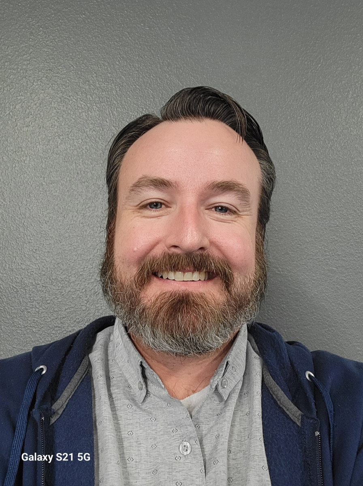

Joseph Stay | WDD 130
My given name is Joseph, but I go by Jay. I was born in Salt Lake City, UT, and moved to Mesa, AZ. when I was 4. I served a full-time mission in the Birmingham Alabama Mission from 2000-2002. After a year of being home, I married my best friend in the Mesa Arizona Temple. We have six children. One is currently serving in the Las Vegas Nevada Mission. He's been out for six months.